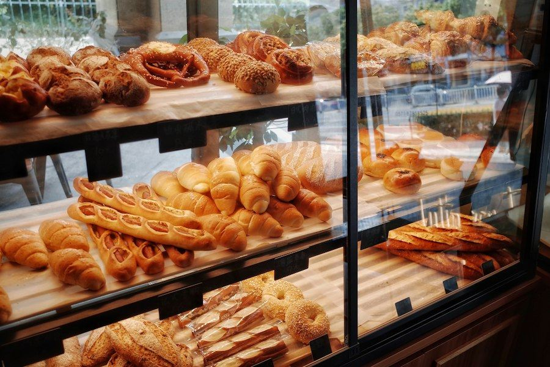
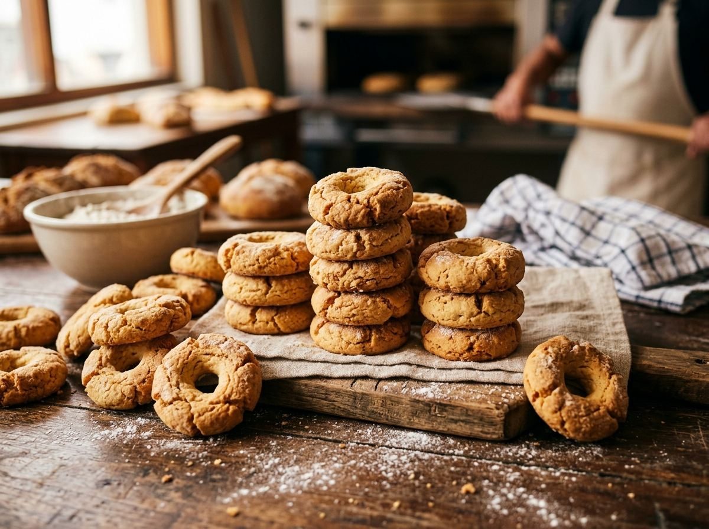
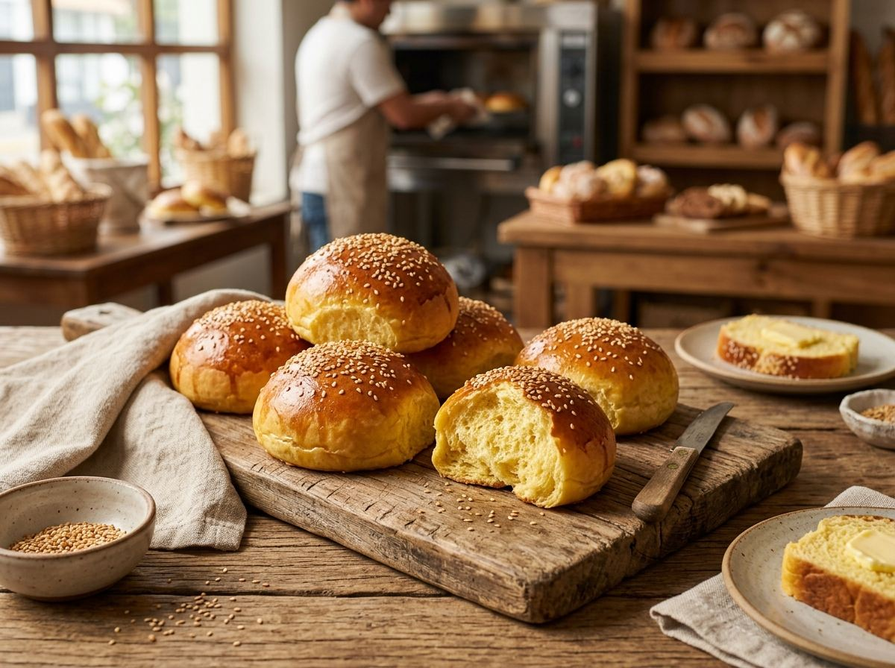

Nuestra Historia y Tradición
Más de dos décadas dedicadas a preservar el auténtico sabor del pan artesanal y la pastelería familiar en Cajamarca.
Cómo nació Panadería William en el año 2000
Nuestra historia comenzó a partir de los recuerdos familiares de elaborar pan artesanal en el campo para el Día de Todos los Santos. En el año 2000, con la experiencia de su fundador como obrero panadero, abrimos nuestro primer local alquilado en el barrio San José, en el Jr. Hualgayoc N.° 363.
Allí ofrecimos Pan Torta y Pan de Agua artesanal, a 12 unidades por S/ 1.00. Gracias a la preferencia de los vecinos, la panadería creció y se trasladó a su local propio en la Urb. El Amauta (Jr. Chanchamayo N.° 1874), ampliando la variedad con pan integral, pan de yema, bizcochos, molletes y las tradicionales rosquitas cajamarquinas.
Con los años evolucionamos de panadería a Panadería y Pastelería William, sumando donas, pasteles frescos y galletas de avena con receta y proceso propio. Seguimos creyendo en la paciencia de la buena masa y en el horneado artesanal que da ese sabor único.

Los 4 Pilares de Nuestra Calidad
Los principios irrenunciables que guían cada lote de masa que sale de nuestras manos.
Ingredientes Nobles
Seleccionamos harinas de la más alta calidad, manteca pura para nuestras rosquitas y huevos frescos de la región. Cada ingrediente tiene procedencia conocida.
Fermentación Paciente
El buen pan no admite atajos. Damos a nuestras masas el tiempo necesario de reposo para desarrollar aromas complejos y una digestibilidad insuperable.
Moldeado a Mano
Cada pan de yema, mollete y rosquita cajamarquina es moldeado artesanalmente por manos que aman el oficio de panadero.
Vocación de Servicio
Atendemos con la calidez y el respeto que merece cada familia vecina que nos confía su desayuno y merienda desde hace más de dos décadas.
Nuestra Trayectoria en Cajamarca
Los momentos clave que han forjado nuestra identidad.
Fundación en el Barrio San José
Fundada por su propietario a partir de los recuerdos familiares de elaborar pan artesanal en el campo para el Día de Todos los Santos y su experiencia como obrero panadero. Inició en un local alquilado en el Barrio San José (Jr. Hualgayoc N.° 363), ofreciendo Pan Torta y Pan de Agua artesanal (a 12 unidades por S/ 1.00).
De local alquilado a casa propia
Gracias a la preferencia de los vecinos y la calidad del producto, la panadería se traslada a su local propio en la Urb. El Amauta (Jr. Chanchamayo N.° 1874). En esta etapa se amplía la variedad incorporando pan integral, pan de yema, bizcochos, molletes y las tradicionales rosquitas cajamarquinas.
Nace la Panadería y Pastelería William
El negocio evoluciona de panadería a Panadería y Pastelería William, sumando a su portafolio donas, pasteles frescos y galletas de avena con receta y proceso propio.
Consolidados en Chontapaccha
Consolidados en el barrio Chontapaccha, manteniendo viva la tradición del sabor característico del horno artesanal y la elaboración diaria que garantiza frescura y atención cercana a cada cliente.
Nuestra Misión y Visión
La esencia que guía nuestro trabajo diario y el futuro que queremos construir.
Misión
Ofrecer productos de panadería y pastelería de calidad, elaborados con insumos seleccionados y manteniendo un sabor característico, brindando una atención cercana y satisfactoria a nuestros clientes.
Visión
Seguir creciendo como una panadería familiar, modernizando nuestros equipos, ampliando la variedad de productos y fortaleciendo nuestros canales de atención para llegar a más familias de Cajamarca.
Galería de Nuestro Oficio Artesanal
Un vistazo a nuestros productos y la pasión diaria con la que horneamos.




"El verdadero valor de una panadería familiar no radica en hornear más rápido, sino en hornear con el mismo cariño y respeto con el que alimentarías a tus propios hijos."
— Don William, Maestro Panadero y Fundador